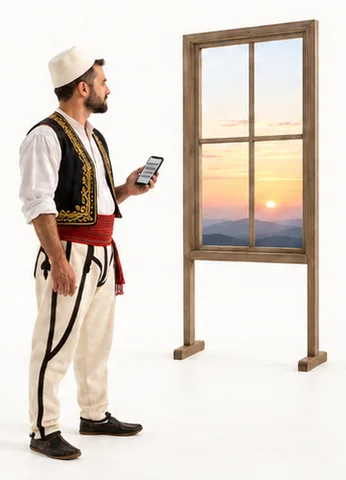
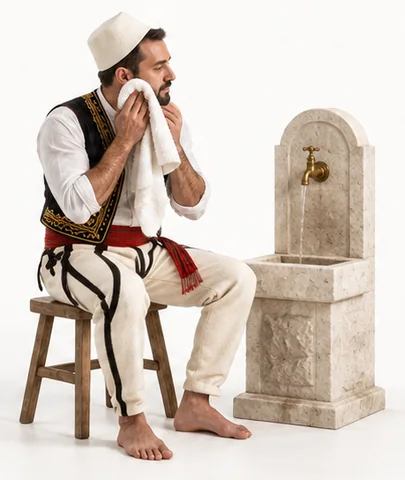
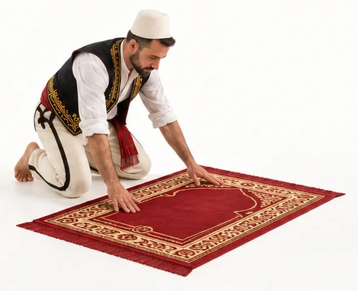
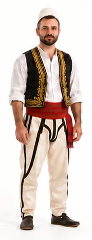
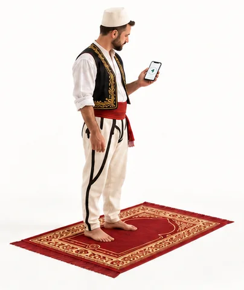
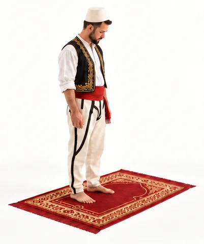

How to pray
Step by step, the prayer of the Prophet ﷺ. Read what the body does and what you say at every step.
What do you need before you pray?1
- 1Has the prayer time begun? Each prayer has its own time. Once the time has begun, you can pray. Before its time the prayer is not valid, so first check that the time has begun. You find the prayer times below.

- 2Do you have wudu? You can only pray with wudu. Some things break your wudu, for example going to the toilet or deep sleep, and then you make it again. After janabah, menstruation or postnatal bleeding wudu is not enough: you need ghusl, washing the whole body. Both are explained below.

- 3Are your body, clothes and place clean? Your body, your clothes and the place where you pray must be free of impurity, like urine or stool. If there is some, wash it off before you pray. Many people pray on a prayer mat, so the place is clean.

- 4Are you covered properly? During the prayer some parts of the body must be covered: for a man from the navel to the knee, for a woman the whole body except the face and hands. The clothes should not be so thin that the skin shows through.

- 5Which way do you face? Muslims all over the world pray facing the Ka‘bah in Makkah. This direction is called the qiblah. At home you can find it with a compass app or by asking at the mosque.

- 6Which prayer are you going to pray? The intention is the decision in your heart about which prayer you are praying, for example Zuhr. You do not need to say it out loud: knowing it in your heart is enough.

When is each prayer prayed?2
Each prayer has its own time. You pray it once its time has begun, not before.

| Prayer | Begins | Ends |
|---|---|---|
| Fajr | At true dawn: the light that spreads across the eastern horizon. | When the sun starts to rise. |
| Zuhr | When the sun has passed its highest point and starts to move west. | When the shadow of an object equals its length (plus the midday shadow). |
| ‘Asr | When the time of Zuhr ends. | Best before the sun turns yellow. With a real need, until sunset. |
| Maghrib | At sunset. | When the red glow in the sky after sunset has gone. |
| ‘Isha | When the red glow in the sky has gone. | At midnight. |
Midnight is halfway between sunset and Fajr. Example: sunset at 17:00 and Fajr at 05:00, then midnight is at 23:00.2
How do you know the times? Today most people follow the times of a mosque, which often shares them in a calendar or an app. That is fine, as long as you trust the people who run the mosque. If you can, you may also look for the signs in the sky yourself.3
Find the times for your place
Type the city or town where you live, choose the month and download the prayer times for the whole month as a PDF.
Calculation settings
Example
| Date | Fajr | Sunrise | Zuhr | ‘Asr | Maghrib | ‘Isha | Midnight |
|---|
GeoNames (CC BY 4.0) · © OpenStreetMap
How do you do ghusl (the full wash)?
In ghusl you wash your whole body with water. There are two ways: a short one that is enough, and a complete one that is the best.4
When is ghusl needed?5
- After intimacy between husband and wife.
- When you have become junub (in a state of major impurity), awake or in your sleep.
- When menstruation ends.
- When postnatal bleeding ends.
- When someone becomes Muslim: some scholars say it is required, many others say it is recommended.
The short way: these 3 steps are enough
- 1
Intention
Intend in your heart to purify yourself.
- 2
Mouth and nose
Rinse your mouth and your nose with water.
- 3
The whole body
Wash your whole body once. The water must reach the roots of the hair and hidden places such as the armpits and the backs of the knees.
The complete way (the best)4
- 1
Intention in the heart. Say Bismillah, wash your hands three times, then wash the private parts.
- 2
Do a full wudu as for prayer.
- 3
Pour water over your head three times and rub your hair so the water reaches the roots.
- 4
Wash the rest of the body, first the right side, then the left.
How do you do wudu?
Without wudu the prayer is not valid. Use clean water. The number shows how many times: 3 times is the Sunnah, once is enough. Wash the right arm and the right foot first.61
Always in this order, from 1 to 9, without a long break in between.
- 1
Intention and Bismillah
Intend in your heart to purify yourself. Say: Bismillah (in the name of Allah).

- 2
Hands 3×
Wash your hands up to the wrists.

- 3
Mouth 3×
Take water into your mouth, swirl it around and spit it out.

- 4
Nose 3×
Sniff a little water into your nose and blow it out with your left hand.

- 5
Face 3×
From the hairline down to under the chin, and from ear to ear.

- 6
Arms 3×
From the fingertips up to the elbows. First the right, then the left.

1. right 
2. left - 7
Head 1×
With hands wet with fresh water, wipe your head from the front to where the hair ends at the back, and back again. The neck is not wiped.7

- 8
Ears 1×
Index fingers inside the ears, thumbs behind the ears.

- 9
Feet 3×
Up to the ankles. First the right, then the left.

1. right 
2. left
Practical things to remember
- Your arms and face are often still wet after wudu and can drip on the floor. So always keep a separate towel for wudu.
- Roll up your sleeves before you start, so you can wash your arms up to the elbows without getting your clothes wet.
- Take off your socks before you start, so you can wash your feet easily.
After wudu you say:
أشهد أن لا إله إلا الله وحده لا شريك له، وأشهد أن محمدا عبده ورسوله
Ash-hadu an la ilaha ill-Allah wahdahu la sharika lah, wa ash-hadu anna Muhammadan ‘abduhu wa rasuluhu
Meaning: I bear witness that there is no god but Allah alone, with no partner, and I bear witness that Muhammad is His slave and Messenger.
You may add:
اللهم اجعلني من التوابين واجعلني من المتطهرين
Allahumma ij‘alni min al-tawwabina wa’j‘alni min al-mutatahhirin
Meaning: O Allah, make me one of those who repent and one of those who purify themselves.
A woman wipes her hair, loose or braided, from the front of the head to where the hair ends at the back. She does not need to wipe its whole length. Otherwise wudu is the same for men and women.
When do you need a new wudu?8910
- Anything that comes out of the two passages: urine, stool and wind.
- Deep sleep, when you would not notice if something came out. Light sleep does not break it.
- Losing consciousness, for example fainting.
- Touching the private part with the hand, with desire.
- Eating camel meat.
In doubt? Then your wudu is still valid.11
Touching a woman does not break wudu, as long as nothing comes out.8
After janabah, menstruation or postnatal bleeding, wudu is not enough. Then you do ghusl (see above).4
How many rak‘ahs does each prayer have?
| Prayer | Sunnah before | Fard | Sunnah after |
|---|---|---|---|
| Fajr | 2 | 2 | – |
| Zuhr | 4 | 4 | 2 |
| ‘Asr | – | 4 | – |
| Maghrib | – | 3 | 2 |
| ‘Isha | – | 4 | 2 |
- Fard: when you are at home (not travelling).1213
- The regular Sunnah prayers are 12 rak‘ahs a day. Whoever keeps praying them, a house is built for him in Paradise.14
- The 4 rak‘ahs before Zuhr are prayed two at a time (2 + 2).15
- ‘Asr has no regular Sunnah. Praying 4 rak‘ahs before it is good, but with less reward.14
- When travelling, the Sunnah of Zuhr, Maghrib and ‘Isha are left. The Sunnah of Fajr and Witr are prayed on journeys too.16
What does the whole prayer look like?
Each card is one step. Click a card for the full explanation further down.13
Choose how many rak‘ahs the prayer has:
 Get readyFacing the qiblah, intention in the heart2
Get readyFacing the qiblah, intention in the heart2 TakbirAllahu akbar3
TakbirAllahu akbar3 Hands on the chestOpening du‘a4Al-FatihahIn every rak‘ah5Another surahOr some verses6
Hands on the chestOpening du‘a4Al-FatihahIn every rak‘ah5Another surahOr some verses6 Ruku‘Subhana Rabbiy al-‘Azim7Stand straightSami‘a Allahu liman hamidah8Stand straightRabbana wa laka al-hamd9
Ruku‘Subhana Rabbiy al-‘Azim7Stand straightSami‘a Allahu liman hamidah8Stand straightRabbana wa laka al-hamd9 SujudSubhana Rabbiy al-A‘la10
SujudSubhana Rabbiy al-A‘la10 SitRabbi ighfir li11Second sujudSubhana Rabbiy al-A‘la12
SitRabbi ighfir li11Second sujudSubhana Rabbiy al-A‘la12 Stand upAllahu akbar
Stand upAllahu akbar

 Get readyFacing the qiblah, intention in the heart2TakbirAllahu akbar3Hands on the chestOpening du‘a4Al-FatihahIn every rak‘ah5Another surahOr some verses6Ruku‘Subhana Rabbiy al-‘Azim7Stand straightSami‘a Allahu liman hamidah8Stand straightRabbana wa laka al-hamd9SujudSubhana Rabbiy al-A‘la10SitRabbi ighfir li11Second sujudSubhana Rabbiy al-A‘la12Stand upAllahu akbar
Get readyFacing the qiblah, intention in the heart2TakbirAllahu akbar3Hands on the chestOpening du‘a4Al-FatihahIn every rak‘ah5Another surahOr some verses6Ruku‘Subhana Rabbiy al-‘Azim7Stand straightSami‘a Allahu liman hamidah8Stand straightRabbana wa laka al-hamd9SujudSubhana Rabbiy al-A‘la10SitRabbi ighfir li11Second sujudSubhana Rabbiy al-A‘la12Stand upAllahu akbar Get readyFacing the qiblah, intention in the heart2TakbirAllahu akbar3Hands on the chestOpening du‘a4Al-FatihahIn every rak‘ah5Another surahOr some verses6Ruku‘Subhana Rabbiy al-‘Azim7Stand straightSami‘a Allahu liman hamidah8Stand straightRabbana wa laka al-hamd9SujudSubhana Rabbiy al-A‘la10SitRabbi ighfir li11Second sujudSubhana Rabbiy al-A‘la12Stand upAllahu akbar
Get readyFacing the qiblah, intention in the heart2TakbirAllahu akbar3Hands on the chestOpening du‘a4Al-FatihahIn every rak‘ah5Another surahOr some verses6Ruku‘Subhana Rabbiy al-‘Azim7Stand straightSami‘a Allahu liman hamidah8Stand straightRabbana wa laka al-hamd9SujudSubhana Rabbiy al-A‘la10SitRabbi ighfir li11Second sujudSubhana Rabbiy al-A‘la12Stand upAllahu akbarThe cards above, at a glance.
Short summary: how the rak‘ahs fit together
1 rak‘ah = one full circle
From standing, through ruku‘ and the two prostrations, until you stand up again. Each circle below is one rak‘ah.


 2Final sittingSalam2First sitting3Final sittingSalam2First sitting34Final sittingSalam
2Final sittingSalam2First sitting3Final sittingSalam2First sitting34Final sittingSalamFirst sitting = tashahhud and salawat. Final sitting = tashahhud, salawat and du‘a, then the salam. In the third and fourth rak‘ah you recite only Al-Fatihah.
Before you start13
Face the qiblah
Stand facing the Ka‘bah. This is required in every prayer, obligatory or voluntary.

Stand
Pray standing. In the obligatory prayers this is required.
Intend it in your heart
Know in your heart which prayer you are going to pray. Do not say the intention out loud: saying it aloud is an innovation (bid‘ah).
The first rak‘ah
Takbir
Raise your hands with the fingers stretched out, level with your shoulders or sometimes your earlobes, and say:

You say:
الله أكبر
Allahu akbar
Meaning: Allah is Most Great
Hands on the chest
Put your right hand over your left hand, on your chest.

Opening du‘a
The best-known opening words are:
You say:
سبحانك اللهم وبحمدك، وتبارك اسمك وتعالى جدك، ولا إله غيرك
Subhanaka Allahumma wa bihamdika, wa tabaraka ismuka wa ta‘ala jadduka, wa la ilaha ghayruka
Meaning: Glory and praise be to You O Allah, blessed be Your name and exalted be Your Majesty, and there is no god but You
Seek refuge
Then say:
You say:
أعوذ بالله من الشيطان الرجيم
A‘udhu Billahi min al-Shaytan ir-rajim
Meaning: I seek refuge with Allah from the accursed Satan
Basmalah
Say it quietly:
You say:
بسم الله الرحمن الرحيم
Bismillah ar-Rahman ar-Rahim
Meaning: In the Name of Allah, Most Gracious, Most Merciful
Al-Fatihah
Recite all of Al-Fatihah and pause at the end of each verse. It is required in every rak‘ah.
Another surah
In the first two rak‘ahs, recite another surah or some verses. This is Sunnah.
Ruku‘ (bowing)
Pause for a moment, raise your hands and say Allahu akbar. Bow with your hands on your knees, fingers spread and back level, and stay until the body is calm. Say this 3 times or more:

You say:
سبحان ربي العظيم
Subhana Rabbiy al-‘Azim
Meaning: Glory be to my Lord, the Almighty
Stand up again
Raise your hands while you say the first sentence. Stand straight until every bone is back in place, then say the second sentence.
You say:
سمع الله لمن حمده
Sami‘a Allahu liman hamidah
Meaning: Allah listens to the one who praises Him
You say:
ربنا ولك الحمد
Rabbana wa laka al-hamd
Meaning: Our Lord, to You be all praise
Sujud (prostration)
Say Allahu akbar and go down, hands before knees. Palms flat on the ground, fingers together and pointing to the qiblah, level with the shoulders. Keep the forearms off the ground. Nose, forehead, palms, knees and toes touch the ground, heels together. Say this 3 times or more:

You say:
سبحان ربي الأعلى
Subhana Rabbiy al-A‘la
Meaning: Glory be to my Lord Most High
Sit between the two prostrations
Say Allahu akbar and sit on your left foot, with the right foot upright and its toes toward the qiblah. Say:

You say:
اللهم اغفر لي، وارحمني، واجبرني، وارفعني، وعافني، وارزقني
Allahumma ighfir li warhamni wajburni, warfa‘ni, wa‘afini warzuqni
Meaning: O Allah, forgive me, have mercy on me, strengthen me, raise me in status, pardon me and grant me provision
Second prostration
Say Allahu akbar and do the same as in the first prostration.
Short rest, then stand up
Say Allahu akbar and sit for a moment. Then stand up for the second rak‘ah, pushing on your fists like someone kneading dough.

The second rak‘ah
Like the first
Pray it like the first rak‘ah, but without the opening du‘a, and make it shorter.
Al-Fatihah
Recite all of Al-Fatihah and pause at the end of each verse. It is required in every rak‘ah.
Another surah
In the first two rak‘ahs, recite another surah or some verses. This is Sunnah.
Ruku‘ (bowing)
Pause for a moment, raise your hands and say Allahu akbar. Bow with your hands on your knees, fingers spread and back level, and stay until the body is calm. Say this 3 times or more:
You say:
سبحان ربي العظيم
Subhana Rabbiy al-‘Azim
Meaning: Glory be to my Lord, the Almighty
Stand up again
Raise your hands while you say the first sentence. Stand straight until every bone is back in place, then say the second sentence.
You say:
سمع الله لمن حمده
Sami‘a Allahu liman hamidah
Meaning: Allah listens to the one who praises Him
You say:
ربنا ولك الحمد
Rabbana wa laka al-hamd
Meaning: Our Lord, to You be all praise
Sujud (prostration)
Say Allahu akbar and go down, hands before knees. Palms flat on the ground, fingers together and pointing to the qiblah, level with the shoulders. Keep the forearms off the ground. Nose, forehead, palms, knees and toes touch the ground, heels together. Say this 3 times or more:
You say:
سبحان ربي الأعلى
Subhana Rabbiy al-A‘la
Meaning: Glory be to my Lord Most High
Sit between the two prostrations
Say Allahu akbar and sit on your left foot, with the right foot upright and its toes toward the qiblah. Say:
You say:
اللهم اغفر لي، وارحمني، واجبرني، وارفعني، وعافني، وارزقني
Allahumma ighfir li warhamni wajburni, warfa‘ni, wa‘afini warzuqni
Meaning: O Allah, forgive me, have mercy on me, strengthen me, raise me in status, pardon me and grant me provision
Second prostration
Say Allahu akbar and do the same as in the first prostration.
First tashahhud
Sit as between the two prostrations. The right hand rests on the right thigh and knee, the left palm on the left thigh and knee. Point the index finger toward the qiblah and move it. Say:

You say:
التحيات لله، والصلوات، والطيبات، السلام عليك أيها النبي ورحمة الله وبركاته، السلام علينا وعلى عباد الله الصالحين، أشهد أن لا إله إلا الله، وأشهد أن محمدا عبده ورسوله
Al-tahiyyatu Lillahi wa’l-salawatu wa’l-tayyibat. Al-salamu ‘alayka ayyuha’l-Nabiyyu wa rahmat-Allahi wa barakatuhu. Al-salamu ‘alayna wa ‘ala ‘ibad-Illah il-salihin. Ash-hadu an la ilaha ill-Allah wa ash-hadu anna Muhammadan ‘abduhu wa rasuluhu.
Meaning: All compliments, prayers and pure words are due to Allah. Peace be upon you, O Prophet, and the mercy and blessings of Allah. Peace be upon us and upon the righteous slaves of Allah. I bear witness that there is no god except Allah, and I bear witness that Muhammad is the slave and Messenger of Allah.
Salawat
Then send prayers upon the Prophet ﷺ:
You say:
اللهم صل على محمد وعلى آل محمد، كما صليت على إبراهيم وعلى آل إبراهيم، إنك حميد مجيد، اللهم بارك على محمد وعلى آل محمد، كما باركت على إبراهيم وعلى آل إبراهيم، إنك حميد مجيد
Allahumma salli ‘ala Muhammad wa ‘ala ali Muhammad kama salayta ‘ala Ibrahim wa ‘ala ali Ibrahim, innaka hamidun majid. Allahumma barik ‘ala Muhammad wa ‘ala ali Muhammad kama barakta ‘ala Ibrahim wa ‘ala ali Ibrahim, innaka hamidun majid.
Meaning: O Allah, send prayers upon Muhammad and upon the family of Muhammad, as You sent prayers upon Ibrahim and upon the family of Ibrahim; You are indeed Worthy of Praise, Full of Glory. O Allah, send blessings upon Muhammad and upon the family of Muhammad as You sent blessings upon Ibrahim and upon the family of Ibrahim; You are indeed Worthy of Praise, Full of Glory.
The third and fourth rak‘ah
Stand up
Say Allahu akbar while you are still sitting and stand up with the help of your hands. Recite only Al-Fatihah. You may add a verse or more. Maghrib has 3 rak‘ahs; Zuhr, ‘Asr and ‘Isha have 4.
Qunut
In the Witr prayer you may say the qunut du‘a before ruku‘, and in times of calamity after rising from ruku‘.
Ruku‘ (bowing)
Pause for a moment, raise your hands and say Allahu akbar. Bow with your hands on your knees, fingers spread and back level, and stay until the body is calm. Say this 3 times or more:
You say:
سبحان ربي العظيم
Subhana Rabbiy al-‘Azim
Meaning: Glory be to my Lord, the Almighty
Stand up again
Raise your hands while you say the first sentence. Stand straight until every bone is back in place, then say the second sentence.
You say:
سمع الله لمن حمده
Sami‘a Allahu liman hamidah
Meaning: Allah listens to the one who praises Him
You say:
ربنا ولك الحمد
Rabbana wa laka al-hamd
Meaning: Our Lord, to You be all praise
Sujud (prostration)
Say Allahu akbar and go down, hands before knees. Palms flat on the ground, fingers together and pointing to the qiblah, level with the shoulders. Keep the forearms off the ground. Nose, forehead, palms, knees and toes touch the ground, heels together. Say this 3 times or more:
You say:
سبحان ربي الأعلى
Subhana Rabbiy al-A‘la
Meaning: Glory be to my Lord Most High
Sit between the two prostrations
Say Allahu akbar and sit on your left foot, with the right foot upright and its toes toward the qiblah. Say:
You say:
اللهم اغفر لي، وارحمني، واجبرني، وارفعني، وعافني، وارزقني
Allahumma ighfir li warhamni wajburni, warfa‘ni, wa‘afini warzuqni
Meaning: O Allah, forgive me, have mercy on me, strengthen me, raise me in status, pardon me and grant me provision
Second prostration
Say Allahu akbar and do the same as in the first prostration.
The fourth rak‘ah
In Zuhr, ‘Asr and ‘Isha, stand up and pray the fourth rak‘ah like the third: only Al-Fatihah, then ruku‘ and the two prostrations.
The end of the prayer
Final tashahhud
Sit with the left foot under the right leg and the right foot upright (tawarruk). Say the tashahhud and the salawat, then seek refuge from four things:

You say:
اللهم إني أعوذ بك من عذاب جهنم، ومن عذاب القبر، ومن فتنة المحيا والممات، ومن شر فتنة المسيح الدجال
Allahumma inni a‘udhu bika min ‘adhab Jahannam wa min ‘adhab al-qabri wa min fitnat il-mahya wa’l-mamat, wa min sharri fitnat il-masih al-dajjal
Meaning: O Allah, I seek refuge with You from the torment of Hell, from the torment of the grave, from the trials of life and death and from the evil of the tribulation of the Dajjal
Your own du‘a
Before the salam, ask Allah for whatever you wish.
Taslim
Turn your face to the right, so that your right cheek can be seen, and say the words below. Then do the same to the left.


You say:
السلام عليكم ورحمة الله وبركاته
Al-Salamu ‘alaykum wa rahmat-Allahi wa barakatuhu
Meaning: Peace be upon you, and the mercy of Allah and His blessings
Prayer words
What the words on this page mean.
- Salahصلاة
- The prayer with set movements and words, five times a day.
- Rak‘ahركعة
- One round of the prayer: standing, ruku‘ and two prostrations.
- Fardفرض
- Obligatory. These rak‘ahs you must pray.
- Sunnahسنة
- What the Prophet ﷺ did. Sunnah rak‘ahs are not obligatory, but very good.
- Witrوتر
- A prayer with an odd number of rak‘ahs, prayed after ‘Isha.
- Qiblahقبلة
- The direction of the Ka‘bah in Makkah, which all Muslims face in prayer.
- Takbirتكبير
- Saying “Allahu akbar”: Allah is the Greatest.
- Ruku‘ركوع
- The bow, with the hands on the knees.
- Sujudسجود
- When the forehead and nose are on the ground.
- Tashahhudتشهد
- The testimony said while sitting: there is no god but Allah.
- Salawatصلوات
- Asking for blessings upon the Prophet ﷺ.
- Salamسلام
- Peace. With the salam you end the prayer.
- Wuduوضوء
- The wash before prayer: hands, mouth, nose, face, arms, head, ears and feet.
- Ghuslغسل
- The washing of the whole body.
- Du‘aدعاء
- A supplication in your own words or with known words.
- Surahسورة
- A chapter of the Quran. The Quran has 114 surahs.
Sources
- IslamQA 107701: Conditions of the Validity of Prayer
- IslamQA 9940: What Are the Times of the Five Daily Prayers?
- IslamQA 139757: They differ concerning the timings of the prayer; who should they follow?
- IslamQA 82344: How to Make Ghusl for Major Impurity
- IslamQA 93027: What Makes Ghusl Obligatory?
- IslamQA 11497: How to Make Wudu
- IslamQA 70120: Is Wiping Neck in Wudu Obligatory?
- IslamQA 14321: Does Changing Clothes Break Wudu?
- IslamQA 36889: Does Sleeping Break Wudu?
- IslamQA 82759: Does Touching the Private Part Invalidate Wudu?
- IslamQA 20330: Things that invalidate wudu
- IslamQA 210538: Wisdom behind Fajr prayer being two rak‘ahs
- IslamQA 13340: Description of the Prophet’s Prayer
- IslamQA 1048: Sunnah Prayers
- IslamQA 175137: Sunnah Prayers: 10 or 12?
- IslamQA 21467: Not doing regular Sunnah prayers whilst travelling apart from the Sunnah of Fajr